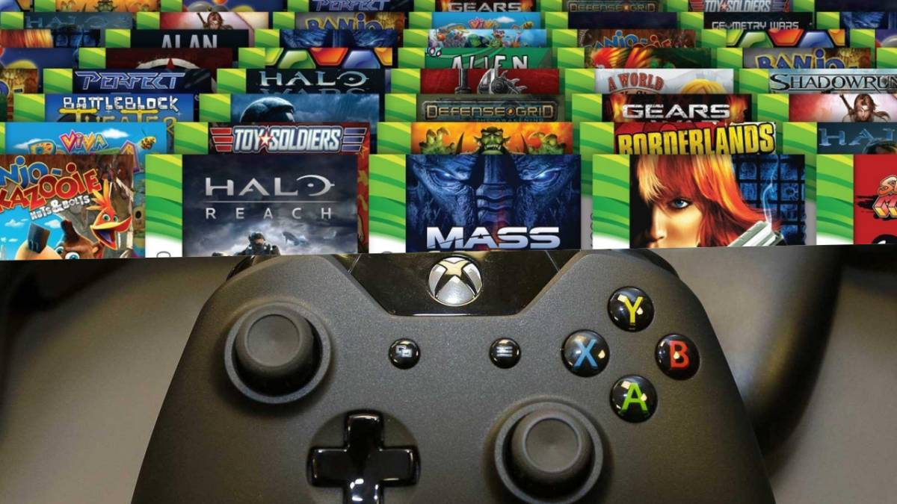
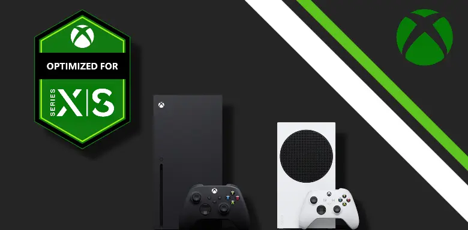

.png)
Xbox Series X es la consola inicial de la octava generación de consolas
de videojuegos, la cual fue lanzada a finales de Noviembre de 2020 y
trae consigo un espectacular hardware que la convierten en la consola
más potente hasta su fecha de lanzamiento. Microsoft entro en el
mercado de las consolas entre 2001 y 2002 con la primera Xbox
una consola que estaba muy por encima de sus competidoras en
el apartado técnico y que heredaba hardware de PC.
Xbox Series X incorpora 16 GB de tipo GDDR6, una memoria principal
que se comunica con el SoC a través de un bus de 320 bits. Un apunte
interesante es que no todo este mapa de memoria trabaja exactamente
en las mismas condiciones. 10 de esos 16 GB operan con un ancho de
banda de 560 GB/s, mientras que los 6 GB restantes se comunican con
los demás componentes del sistema con una velocidad de transferencia
de 336 GB/s. La APU y la memoria principal de esta consola han sido
dimensionadas con un objetivo muy claro: enfrentarse con garantías al
renderizado de los juegos a 2160p, pero manteniendo el coste bajo
control para que el precio de la consola no se dispare.

Algo que nos gusta de la Xbox Series X en contraposición a lo que ocurre
con otras consolas del mercado, es que esta consola sí es totalmente
compatible con los juegos de anteriores generaciones, incluso los
de Xbox 360, de hecho tendrás la oportunidad de ver mejoras gráficas
que hacen que se vean bastante mejor en Xbox Series X que en
su consola de origen.

Microsoft si algo ha demostrado es que le gusta cuidar de su producto
y con ello cuidar de sus usuarios, ya que al final el usuario es el que
paga el juego, y hay muchos juegos que son exclusivos de Xbox que
han sido revisados y mejorados para que tenga un rendimiento superior
en la Xbox Series X. Por eso como mencionamos en el bloque anterior
te encontrarás con que muchos juegos tienen un rendimiento muy alto
en comparación con lo que puedes esperar de una Xbox 360, por ejemplo.
Sabemos que esto es algo que genera un gran debate entre la comunidad
y sinceramente no es algo que queramos reabrir en este momento. Pero
creemos que cualquier usuario razonable podrá admitir que Xbox Series X
es un monstruo con una potencia gráfica apabullante y de la que aún estamos
muy lejos de ver su techo gráfico.